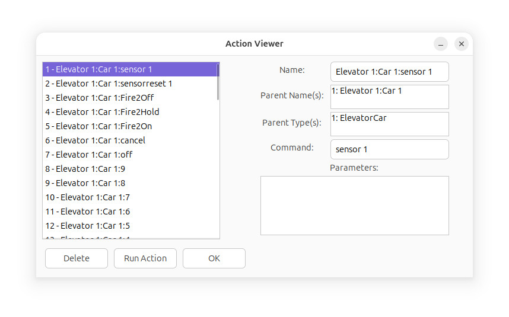

Action Viewer
The Action Viewer lists the loaded
actions in the current simulator instance, and shows details about
them on the right. For more information about Actions, see
the script guide.

Each action can have multiple parents, the
parents are listed in the Parent Name(s) box. Their
types are listed in the next box. Command is the
simulator command the action uses, and parameters are the
command's parameters.
The Delete button deletes the selected
action. Run Action runs the
selected action.